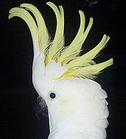

(Cacatuidae)

Cacatúa es un género de aves psitaciformes de la familia Cacatuidae. Es un ave prensora que se encuentra desde las islas Filipinas y el este de Wallacea hasta las islas Salomón y el sur de Australia. Tienen un plumaje primariamente blanco (en algunas especies rosado o amarillo), un prominente penacho, y un pico negro (subgénero Cacatua) o pálido (subgénero Licmetis). Actualmente muchas especies de este género son consideradas amenazadas por una combinación de pérdida de hábitat y captura para el comercio de aves silvestres, la cacatúa oftálmica, la cacatúa de las Molucas y la cacatúa blanca consideradas vulnerables, la cacatúa filipina considerada en peligro de extinción, y la cacatúa sulfúrea considerada en peligro crítico de extinción.
El pico de los machos es un poco más grande y encorvado que el de las hembras
Algunas especies tienen zonas pequeñas con colores más llamativos como son el amarillo o el rojo.
Son animales muy sociales y se desplazan, comen y descansan en bandadas muy ruidosas.
Como otras especies de aves, las cacatúas son monógamas y crean vínculos fuertes con su pareja que duran muchos años.
Las cacatúas se caracterizan por poseer un penacho eréctil, el cual es utilizado para poner de manifiesto los diversos estados de ánimo.